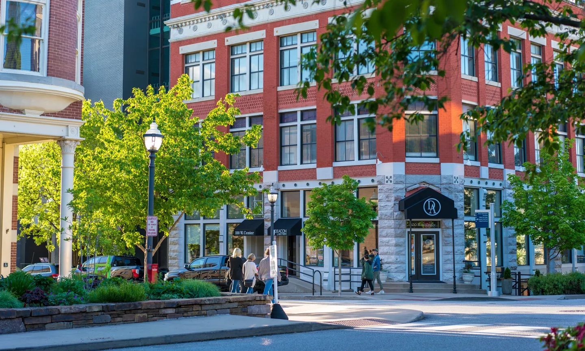

Fayetteville
Have you ever heard of an urban city with a suburban feel? This is precisely what Fayetteville offers. It is in the beautiful northwest part of Arkansas, surrounded by the Ozarks. It offers gorgeous views with a lively nightlife scene—home to the University Of Arkansas. Whether you want to visit some unique restaurants, go shopping, or ride a bike, this city has it all.
Interesting Facts about Fayetteville
- While the city's roots can traced back to the 1800s, the area was inhabited by Native American tribes, such as the Cherokee, long before.
- The city is located in the jurisdiction of Washington County. The town was supposed to be named Washington, but there were worries about confusion between other cities in a different region.
- During the Civil War, it became a target for burning and looting due to tensions moving toward the South. Fayetteville Hisory
popular leisure activities
- The Northwest Arkansas Mall is one of the major shopping centers in Fayetteville.
- Clinton House Museum is great place to visit for its rich history.
- Lake Fayetteville Park is perfect for those who love nature. Google
| City Population | Year Incorporated | Region | Classification | Average Income compared to state |
|---|---|---|---|---|
| 99,285 | 1836 | Northwest | Urban | $56,881(Slighly higher than state average $56,335) |
| Fayetteville Census | ||||
